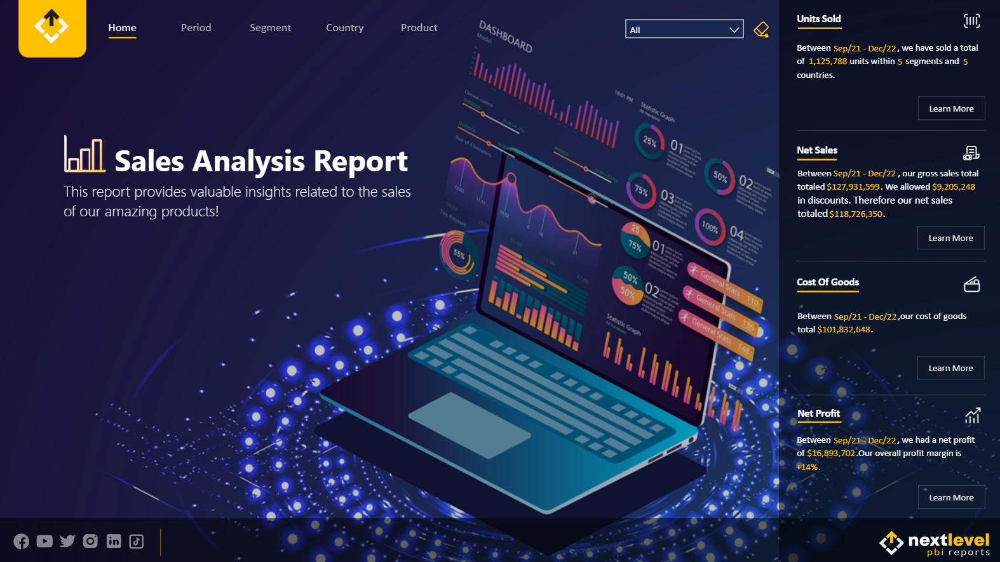

Featured BI Project
Power BI
Sales Analysis — Power BI Dashboard
Business-facing sales reporting project focused on executive KPI visibility, trend analysis, and interactive exploration by product, customer, and time period.
- Designed a reporting model around sales performance, customer behavior, and time-based analysis.
- Used DAX measures, guided navigation, drill-through, and tooltips to support self-service exploration.
- Presented the dashboard as a recruiter-friendly BI case study with a live report and GitHub repository.